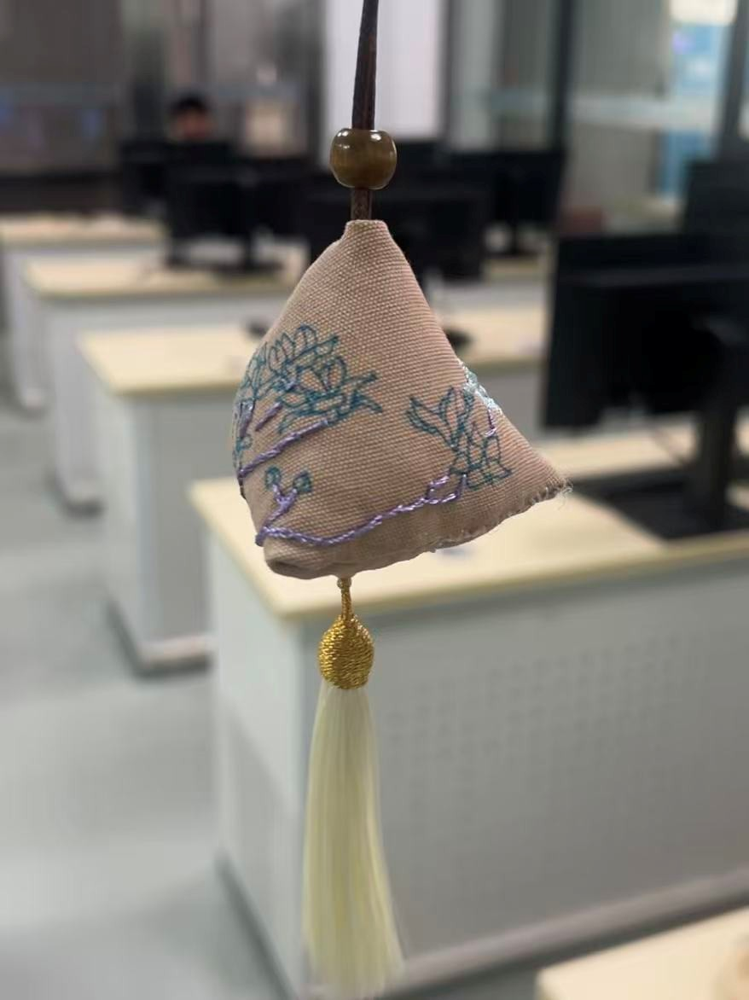

这件香囊，虽方寸之物，却意蕴万千。退红的古雅，玉兰的高洁，紫枝的奇崛，蓝花的清丽，共同构筑了一个微缩的、充满诗意的精神世界。它是对汉绣技艺的致敬，却非简单的复刻；它立足于传统的美学符号，却赋予了其当代的艺术表达。
那一针一线，绣出的不仅是美丽的玉兰图案，更是我们对“美丽山河”的理解——那既是外在的自然景致，也是内在的文化山河。我们以现代人的视角，重新解读、演绎传统，让古老的技艺在新时代焕发出新的生命力。
最后，香囊的缝合，采用了传统的“藏针法”，使作品浑然天成，配上摇曳的流苏，更添一份古典韵味。当轻轻捧起，仿佛能闻到穿越千年飘来的淡淡药草清香与墨香，感受到手作的温度与时光的沉淀。
这枚“玉兰清韵”香囊，是我与汉绣的一次对话，是古典与现代的一次握手。它承载着历史的厚重，也洋溢着创新的活力，愿它能将这份跨越时空的清韵，传递给每一位见到它的人。
